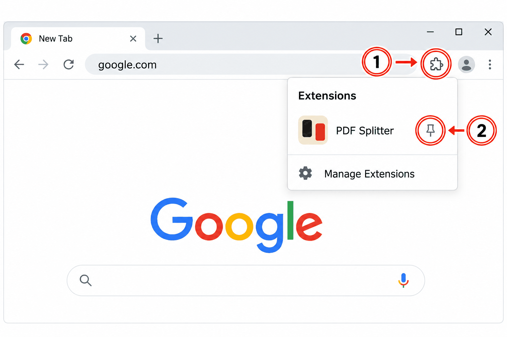
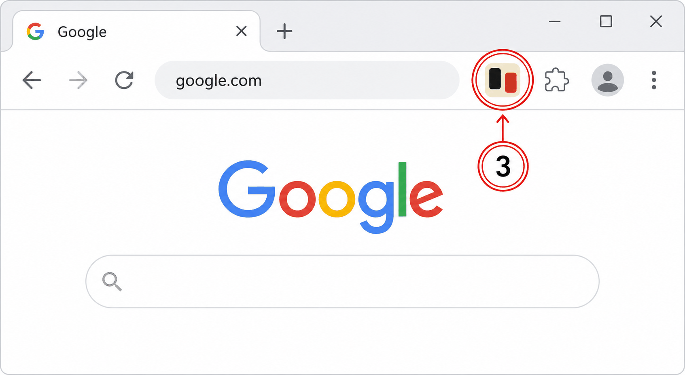

PDF Splitter is installed!
1 Click the puzzle piece in the top right of your browser.
2 Then, click the little pin next to the extension:

3 Click the highlighted icon - the workspace opens: drop a PDF to split, extract, remove or rotate pages:
